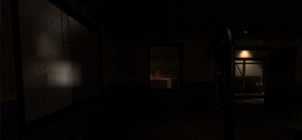
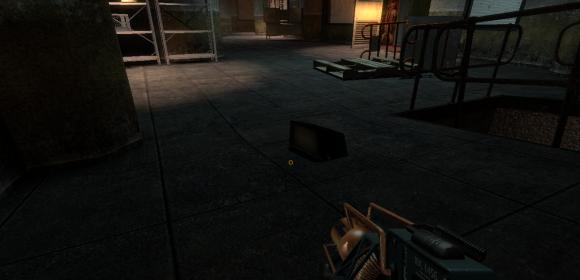
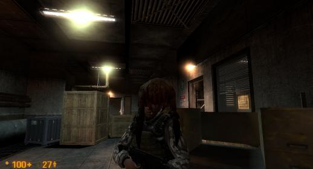

Picture one: Is it possible/worthwhile to sandwich a hallway here? Granted I realize that would require making the storage room shorter but if the third floor is any indication, there are offices somewhere past this wall.
Picture two: I ran across this physics prop while on the third floor. One of its sides is completely see-through. I would suggest removing this prop.
Picture three: John Freeman can’t give the officer his license because he is possessed and has headcrabs.



Sure thing. I’ll post my stuff where you want it, when I see the thread.
I could give it a go, it might make the room a bit less monotonous. I’ll think about it!
Shit, didn’t even consider that at all. It’s the light which has been taken off the wall, but that model doesn’t have a back. Will have to think of a better way to try and show that.
Heh. Poor officer.
Yes, it is possible, and is actually pretty damn easy. I could probably get every single rail in OaR electrified in the space of about half an hour.
Bringing back the electric hazards from HL1 was something I was initially considering doing early on in development, but I just don’t think it would work very well. I really do agree with the player having some incentive to use the tram due to the electrical hazard, and if I had my own way I’d actually do it. But, removing the electricity from the rails proved to be generally a popular decision by the BM devs, and it really does make travelling around on foot a LOT less frustrating. In addition, for consistency I’d have to electrify all the rails in Power Up, and on A, which would require me to decompile and work on/distribute them. Which is a lot of time and effort, and decompilation ALWAYS makes maps worse, under the hood. One other point is that I don’t know if a trigger_hurt made up from hundreds of brushes counts as a single entity or as hundreds, but if the latter is true, then it would use up hundreds of entities, on maps where I’m already very, very limited in that area.
Overall it’s a nice idea but it won’t happen, sadly.
Both. Performance suffers because the areaportals and occluders get broken. You have to remake them yourself, and then guess their I/O setup and optimal connections. Unless you’re better at optimization than the dev that designed the level, it will most likely perform worse, as a result. It’s pretty time consuming to do this.
Bugs wise, very often geometry is in slightly the wrong place or misaligned. It happens a lot, I’ve suffered from it a lot on OaRU because the brushwork is so complicated. Hammer has trouble remembering that stuff by default, when you throw in the inaccuracy of a decompilation, it hurts. Overlays tend to be broken too.
It’s not awful, but it’s bad enough to be a problem. It should only be done if necessary, really. It’s why I haven’t decompiled A.
Regarding electrifying the rails brought up by ODB, what about having several instances throughout the A maps and B maps affecting certain lengths/sections of track, not all tracks, as a result of downed power lines or some such accident. After encountering the first instance, players will think twice about blindly jumping on/running along the tracks. You might be able to tie one occurrence into some sort of puzzle.
Definitely. It’s the only way to edit an existing map if you don’t have the source vmf. And all sorts of weird stuff happened because of it (there was a discussion on the very first page about some black textures that popped up out of nowhere).
I was thinking more along the lines in areas where there are multiple tracks, sidetracks or parallel tracks, not the main track that the player needs to pursue. Those tracks that are electrified could be severed as a result of an accident/explosion.
Maybe it’s too difficult to bring together, considering available props/models. The way the maps are presently made, the player most likely would be able to easily avoid them anyways.
@ TextFAMGUY1
I had an idea concerning those electrical panels that have the four vertical wires coming out of the panel’s tops, that sometimes aren’t connected to anything https://i.imgur.com/gSEONDj.jpg. For those cases where they are situated near a corner, rotate it 90 degrees left or right, depending on the situation. The four wires could then be connected to the adjacent wall. Since the long horizontal wires end up going into the ceiling and floor after rotation, this only works if there’s no adjoining areas, directly above and/or below. Obviously, the decals on the front panel would also rotate, but that’s no biggie. This also ends up creating two new kinda different looking models, instead of seeing the same one over and over. This may also be useful in tight fitting areas.
Furthermore, I thought you might appreciate this clever and exact positioning (and clipping) by a BMS Dev, of the panel mentioned above https://i.imgur.com/nDe7CiQ.jpg. Nary a stray wire anywhere. This is in Blast Pit, directly across from the giant fan.
I finally got this damn account working. Thank god
Would it be possible to add a fourth floor to the office complex? For decorative purposes, I mean. You could see the fourth floor above you, and in the 2 stairwells you could have some shelves blocking the fourth floor off. I think it would be neat and help show the expansiveness of the transit system. You could also allow the marines which ambush you after opening the boom gates to rappel down from the fourth floor, too (after player exits security office)
Concerning the light fixture that’s on the floor in the A2 map that .RK mentioned, I reported this in one of my earlier feedbacks. At the time I also suggested that it might be a good idea to have some sort of remnant or evidence on the wall/ceiling where the light was originally mounted before it was dislodged and fell to the ground, like a bracket and wire combination (I don’t think a wire on its own would properly convey the situation). I realize the asset(s) don’t readily exist and you’d have to “create” something appropriate, but we all know how gifted you are at that.
Besides being a nice realistic touch, not everyone may see/notice the fallen light fixture(s) on the floor, especially if an explosion sends it hurtling who knows where. If there’s no evidence on the wall indicating where the light fixture was mounted, someone (besides me!) may wrongly conclude that you forgot to place one there.
This is how electric trains work if there are no overhead wires, and it would make sense in this facility (=cheap/simple). It could make the on-a-rail more realistic. The third rails could generally be placed on the far side of where there is ‘interesting’ stuff; it could be made visible if they are ‘on’ or ‘off’. Where they are missing, the train couldn’t go.
Or It may be possible to always have them covered from three sides, so you can safely walk on them, but in some sections the third rail could be exposed (cover ripped off), and that’s where they electrify you (think this: https://commons.wikimedia.org/wiki/File:Stromabnehmer_U-Bahn-Detail.JPG)
In the real world third rails don’t work under water.
Hello! I’ve been trying to get on here for months, and finally the Internet Gods have smiled upon me!
First order of business: I’ve been following this and ST Uncut for a long time, and I must say I have enjoyed watching these projects develop! The final version (2.0) of ST Uncut was fantastic, and very well-polished! It was similar enough to the rest of BM to fit in, yet different enough to be enjoyably unique!
Next: I have played the alpha of the A and B maps! Again, very well done! my comments/concerns are the same ones that have been previously mentioned, so I’ll save everyones time on that. My only concern that I felt has not been mentioned, is that the sniper seems to be up too high, and I have qute a difficult time trying to get a granade (hand or mp5) into his tower. Maybe I’m doing it wrong?
Finally: As for the electrified rail debate, why is everyone saying that the rails need to be electrified for the trams to run? Why can’t they have built-in batteries, or gas engines? That’s what I have always assumed…
PS: Sorry for spelling/grammar errors. I’m on my tablet. I shall be more careful while on my PC.
Derp, ever been to subway? guess not.
Come back to us when you figure out why the rail system has three rails and why the central rail looks the way it does.
Hint: ‘hey, we have a massive power plant that produces a shitton of megawatts, let’s waste some more money on batteries and petrol.’
P.S. No, I am not that bothered about the rails not being electrified, especially bearing in mind what kinda effort it takes to make it work. But it would be nice and perfectly reasonable if it would be reintroduced.
Completely unnecessary. The office complex is already very large.
As far as adding electricity damage to the rails, this sums it up. Most people, it would seem, don’t really miss/want the damage, and changing the maps would be a pain in the ass.
Yes, I have been to Subway! I love me a toasted BLT! :freeman:
But yes, I have ridden on subsurface trains, and yes, I know how it works. As for the Power Up power plant, don’t you just turn that on so you have the juice to turn the turntable? I don’t think it ever says that that’s for the rails… (In Black Mesa, anyways?)
Besides, the old transporter in Blue Shift runs on batteries; you have to charge one yourself! Who’s to say these trams don’t run on one of those?
Finally, I’d say the third rail is more of a game design decision. As it is (If I’m not mistaken), there’s a clip over them so you can walk on top of the rails without falling between them. If there were only 2 rails and no clip, you’d constantly be getting “stuck” on the rails everywhere. If they tried having a clip between the 2 rails (with no third in the middle), it would then be distracting and odd. Either way, 2 rails is kind of a pain.
I don’t have a design issue with the rails causing electrical damage, but I think decompiling/recompiling every single map with rails in it would take a lot of Text’s time, and we may lose some performance as a result. It’d probably be good for making the tram more necessary, but honestly I don’t see it being worth the time. But hey, it’s not my decision, is it?
Founded in 2004, Leakfree.org became one of the first online communities dedicated to Valve’s Source engine development. It is more famously known for the formation of Black Mesa: Source under the 'Leakfree Modification Team' handle in September 2004.


{kind=link}
{kind=link}
{kind=link}